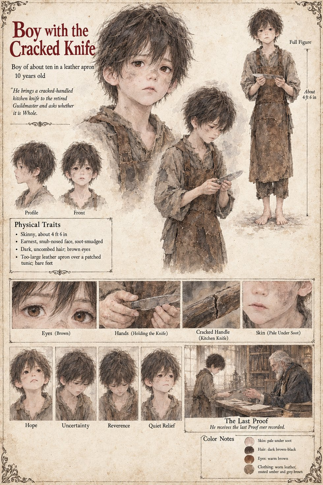

Boy with the Cracked Knife
A boy in a leather apron · unnamed · about 10 years old
A skinny boy of about ten, about 4 ft 6 in, with an earnest, snub-nosed, soot-smudged face, dark uncombed hair, warm brown eyes and bare feet, in a leather apron too large for him over a patched tunic. The sheet's line is He brings a cracked-handled kitchen knife to the retired Guildmaster and asks whether it is Whole. “Whole” is the word of the Proof: Ansbert tells the Hierarch at the Ordeal that both blades are Whole, and the Guild's ledger has a column headed Whole and a column headed Broken (Rich Merchant's Son). The sheet's close-up shows the handle, a split along its grain.
Its one scene, The Last Proof, with the line He receives the last Proof ever recorded, draws the boy holding out the knife across a table to an old white-bearded man in a dark gown in a room of shelves and ledgers. The sheet does not name the old man; the publication notes call him the retired Guildmaster and set the scene in Chapter 10, where the Guild closes. The Guildmaster on the other pages is Gundobad Rotger, whose own sheet closes the Guild's last ledger, and he is presumably the man the boy comes to, though the sheet's old man has a long white beard against his close-trimmed grey. This page does not say what the Proof finds.
His expression panels run Hope, Uncertainty, Reverence and Quiet Relief. Written from the sheet, from what the other Case 4181 pages already say, and from the character notes in the case's publication-prep file; the manuscript itself was not to hand. His age of about 10, skinny build, pale skin under the soot, dark brown-black hair, warm brown eyes and worn leather in muted umber and grey-brown are the sheet's own.
“asks whether it is Whole”